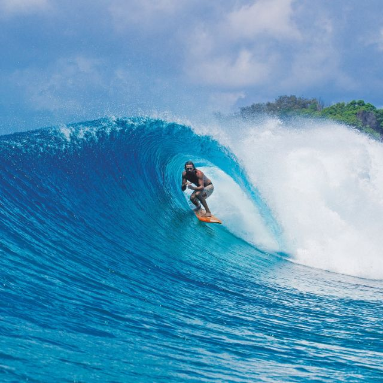
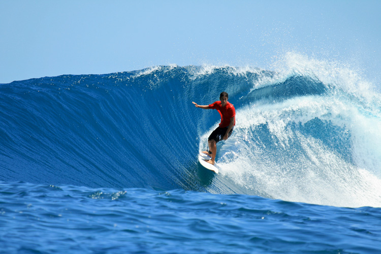
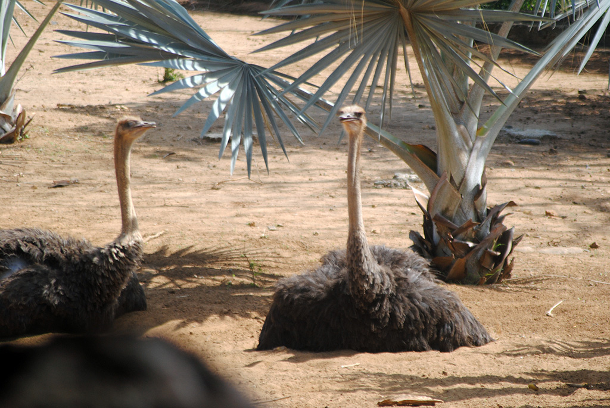
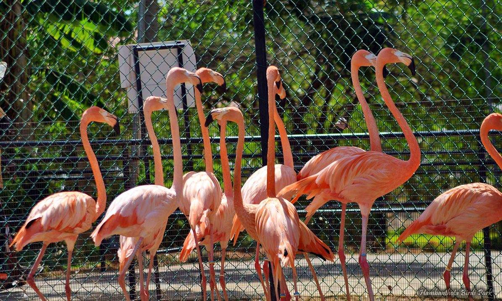
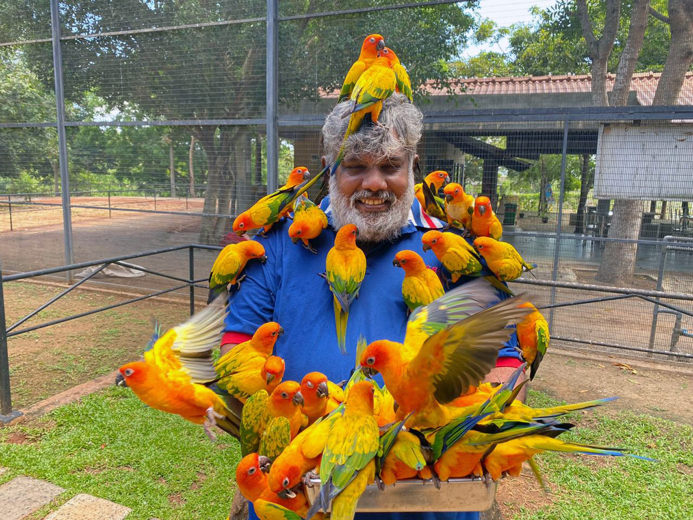
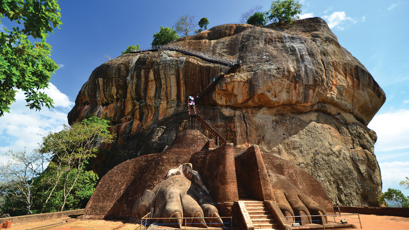
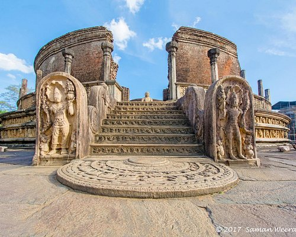

Surfing is a surface water support in which an individual
a surfer, uses a board to ride on the forward section, or face, of a moving
wave of water, which usually carries the surfer towards the shore. Waves suitable for surfing
are primarily found on ocean shores, but can also be found in standing
waves in the open ocean, in lakes, in rivers in the form of a tidal bore, or in wave pools.
The country has many beaches for surfing,especially in the southern and eastern regions.
Places such as Arugam Bay, Hikkaduwa, Weligama, Mirissa and Unawatuna are popular surf sports in Sri Lanka
and among tourists. Sri Lanka is a Perfect destination for surfing. With its beautiful beaches, warm topical
water, ideal weather patterns and swells that provide pristine blue waves to suit all abilities,Sri Lanka surfing
makes for a unique experience.


Birds watching in Sri Lanka


Bird watching in Sri Lanka is a delightful experience, given the
country's rich bio diversity.Key locations include Sinharaja Forest Reserve, Yala National park and
Bundala National Park. You can spot a variety of colorful birds, inclding endemic species like
the Sri Lanka Junglefowl and the Sri Lanka Hanging parrot. Consider hiring a local guide for a more rewarding
birdwathing adventure.Birdwatching or birding is the observing of birds, either
as a recreational activity or as a form of citizen science.A birdwatcher may observe by using their naked eye, by
using a visual enhancement device like binoculars or a telescope, bylistning for birds sound, or by watching public webcams.

Hiking in Sri Lanka
Sri Lanka offers divers and scenic hiking opportunities.Explore Ella Rock
for stunning views, trek through Hortain Plains National Park to see World's End, or climb Adam's
Peak for a spiritual experience. Be prepared for varying terrain and check weather conditions before you hike.
A guide to the best hiking in Sri Lanka. Day hike in Ella and Hortain Plains, Climb Adam's Peak, or go trekking in the
Knuckles Mountains. Walk through jungles, trek in tea estates, and gaze over spectacular landscapes from viewpoints
here are the best hiking routes in Sri Lanka.Sri Lanka is a special hiking destination.There are trails for all sorts of experience
levels, from easy walks to more intense treks.
Explore Ancient Ruins


Sri lanka is home to a nimber of ancient ruins that offer visitors a glimpse
in to the country's rich history and cultural heritage. These ancient ruins are scattered throughout the country
and include temples, fortresses, and cities that date back to ancient times.The ancient ruins of SriLanka offer visitors a unique
opportunity to explore the country's rich history and cultural heritage.Whether you are intrested in ancient architecture,
religious history, or simply want to explore the ancient ruins of a bygone era, Sri Lanka has something to offer everyone.